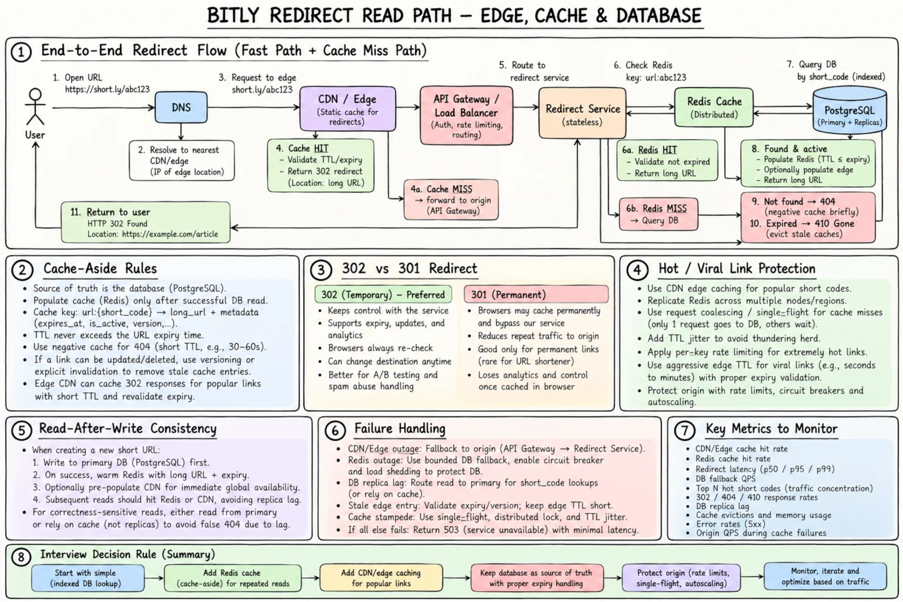

Topic · Scaling Reads: Bitly URL Shortener
Bitly Read Path: Cache, Edge, Database
The redirect hot path: edge → Redis → indexed DB → 302, with expiry, hot-link protection, and read-after-write handled explicitly.


Quick Revision
- Redirect: edge hit → 302; else Redis hit → 302; else PK lookup → fill Redis → 302.
- Expired → 410 + purge caches; missing → 404 + short negative cache.
- Redis and CDN are disposable copies; PostgreSQL is the truth.
- New links: commit primary, then warm Redis - never trust a lagging replica.
- Analytics is async; it never blocks a redirect.
Components
- Frontend - React/Next.js create page on a CDN; local state; calls
POST /api/urls. - Edge - DNS, CDN static assets, optional edge redirect cache for hot codes, API gateway (TLS, auth for management, size limits, rate limits).
- Services - Creation, Redirect, ID Generator, optional Analytics consumer.
- Data - PostgreSQL primary, read replicas, Redis cluster, Kafka/queue for clicks, backups + PITR, metrics/logs/traces.
Redirect: Browser → DNS/CDN/edge → Redirect Service → Redis/DB → HTTP 302 Create: Browser → CDN frontend → POST API → Creation Service → ID allocator → DB
Why bypass the SPA? Rendering React for a redirect adds HTML/JS download, boot time, failure modes, and latency before Location.
Redirect flow and rules
- User opens
short.ly/{code}; DNS → nearest edge. - Valid edge hit (TTL/expiry checked) → 302.
- Edge miss → gateway → Redirect Service → Redis.
- Redis hit → check status/expiry → 302.
- Redis miss → PK lookup → active: fill Redis (TTL ≤ expiry) → 302; expired: 410 + evict; absent: 404 + brief negative cache.
- Emit click event asynchronously.
if missing: 404 elif status != ACTIVE: 404 or 410 by policy elif expires_at <= now: 410 and purge caches else: 302
- Redis rules - not the truth; TTL ≤ expiry; short negative cache; single-flight on viral misses; TTL jitter; per-key hotness; invalidate + version if edits arrive.
- CDN - static assets always; edge redirects for globally hot codes with short TTLs and expiry/version metadata. Costs: invalidation, debugging, platform limits.
- Replicas - more capacity and failover, but lag can make a new code look missing. Warm Redis, read primary, or min-version tokens; never long negative-cache a replica miss.
- Analytics -
enqueue click → return 302; event IDs for dedupe; at-least-once OK; redirects continue if analytics is down. - Cleanup - runtime check is mandatory; batch-delete or archive expired rows; keep tombstones if delayed invalidations are possible.
302 vs 301
| Choice | Benefit | Cost | Use when |
|---|---|---|---|
| 302 Found | Every visit reaches you: expiry, edits, analytics, abuse control | More origin traffic | Default |
| 301 Moved Permanently | Browsers/CDNs skip you later | Hard to revoke; analytics lost | Truly permanent links |
307 also keeps control and preserves the HTTP method - irrelevant for normal GET redirects.
Trade-offs
| Choice | Benefit | Cost / risk |
|---|---|---|
| Redis cache-aside | Fast reads, easy adoption | Miss latency, invalidation |
| Warm cache after write | New link works instantly | Extra write work |
| Lazy cache fill | Simpler writes | Slower first read; replica-lag risk |
| Edge redirects | Lowest latency and origin load | Invalidation, cost, debugging |
| Origin-only redirect | Simpler | Higher latency and QPS |
| Primary reads | Fresh | Primary load |
| Replica reads | Capacity | Stale 404 risk |
Interview practice
Answer aloud, then reveal.
Why Redis? What key and TTL?
Small, immutable, latency-sensitive mappings. url:{code}, TTL ≤ remaining lifetime, with status/version metadata.
Can Redis be the source of truth?
No - it can evict or lose data. A Redis counter can allocate IDs, but mappings live in durable storage.
How do you guarantee a new link works immediately?
Commit to primary, warm Redis after commit, delete any negative cache, don't read from a lagging replica.
Could the CDN cache a 302?
Yes, with explicit policy and TTL never past expiry, preserving invalidation and safety.
How do you expire links?
Store expires_at, check at read time, bound every cache TTL, return 410, clean up asynchronously.
Keep analytics from slowing redirects?
Publish asynchronously after the redirect decision; consumers update analytics independently.
When do you add read replicas?
After caching, when DB reads or availability need it - with lag-aware routing.